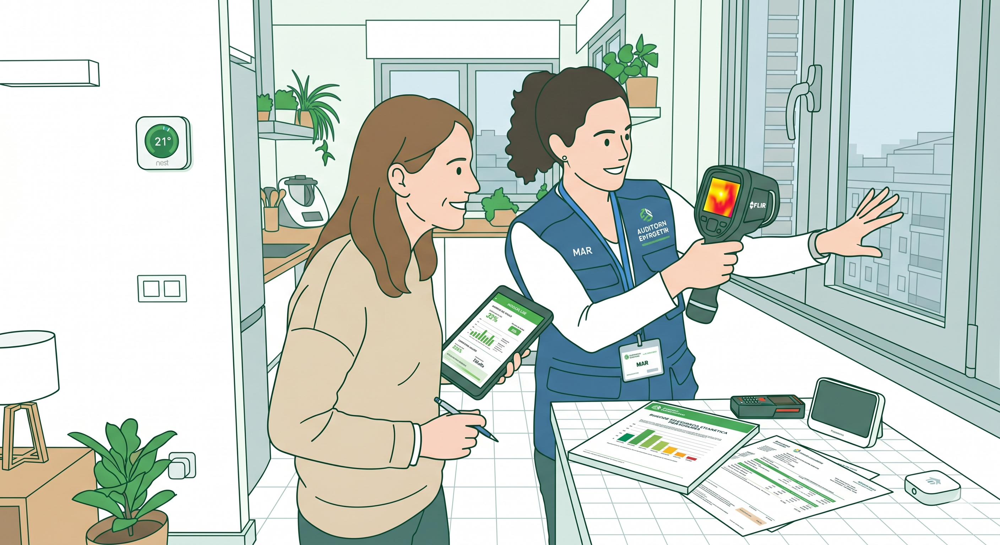

0. Introducción

La energía forma parte de tu día a día, aunque no siempre seas consciente. Cada vez que enciendes una luz o cargas el móvil, estás tomando decisiones que afectan a tu bolsillo… y también al planeta.
Sin embargo, muchas veces no sabemos realmente cuánto consumimos ni por qué pagamos lo que pagamos en la factura eléctrica. ¿Es mucho o poco? ¿Podríamos reducir ese gasto sin renunciar a nuestro confort? Estas preguntas son más importantes de lo que parecen, especialmente en un contexto donde el precio de la energía cambia constantemente y la sostenibilidad se ha convertido en una prioridad.
En esta situación de aprendizaje te vas a convertir en una especie de “auditor/a energética/o” de tu propio hogar. Analizarás cómo se consume la energía, interpretarás una factura eléctrica real y detectarás posibles mejoras. A partir de ahí, propondrás soluciones prácticas para reducir el consumo, ahorrar dinero y hacer un uso más responsable de los recursos.
Porque, aunque a veces no lo parezca, pequeños cambios en nuestros hábitos pueden marcar una gran diferencia.